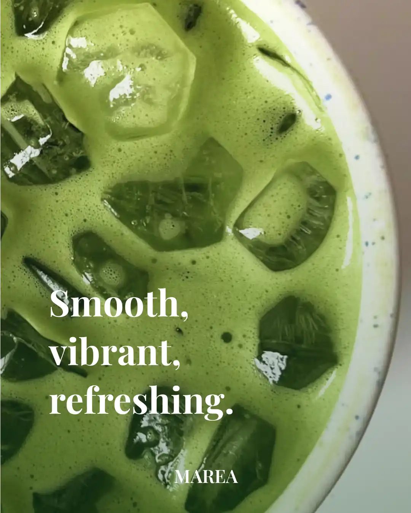
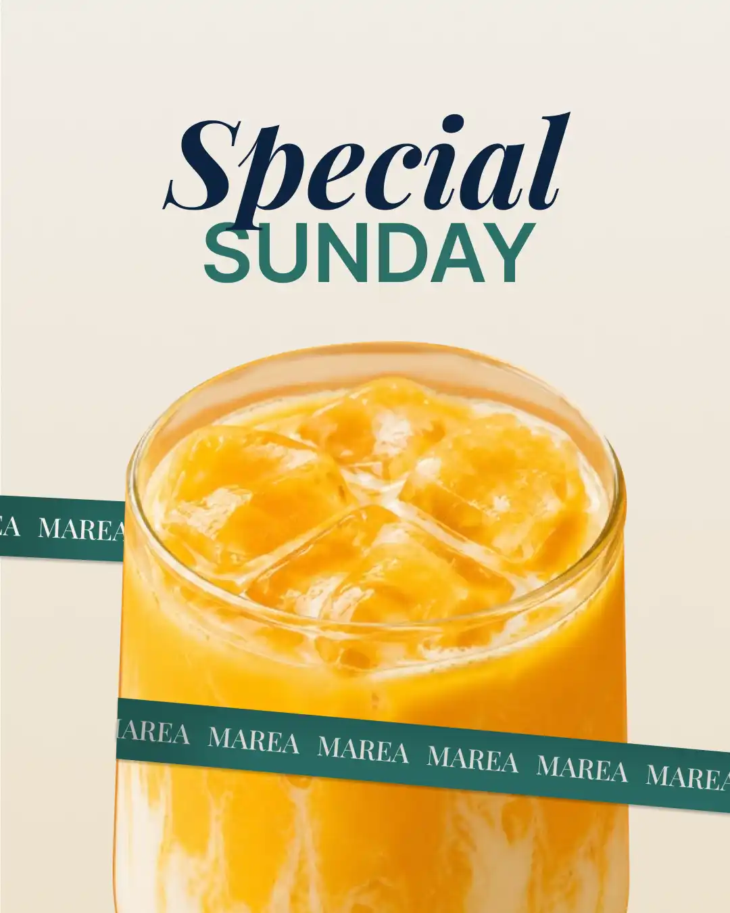
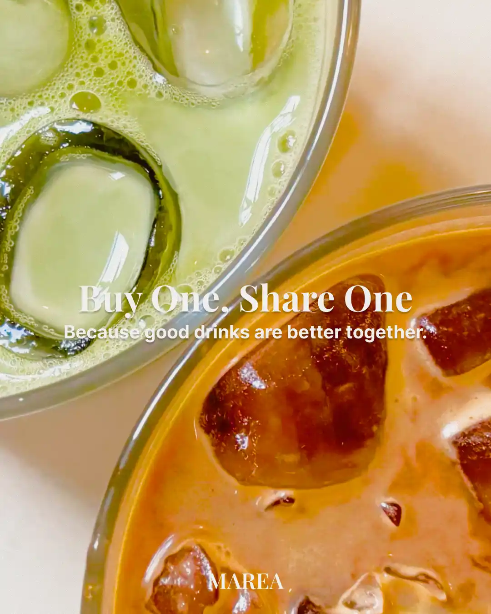
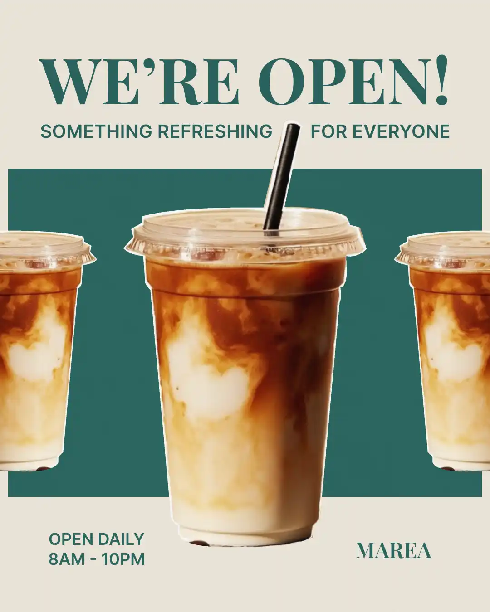
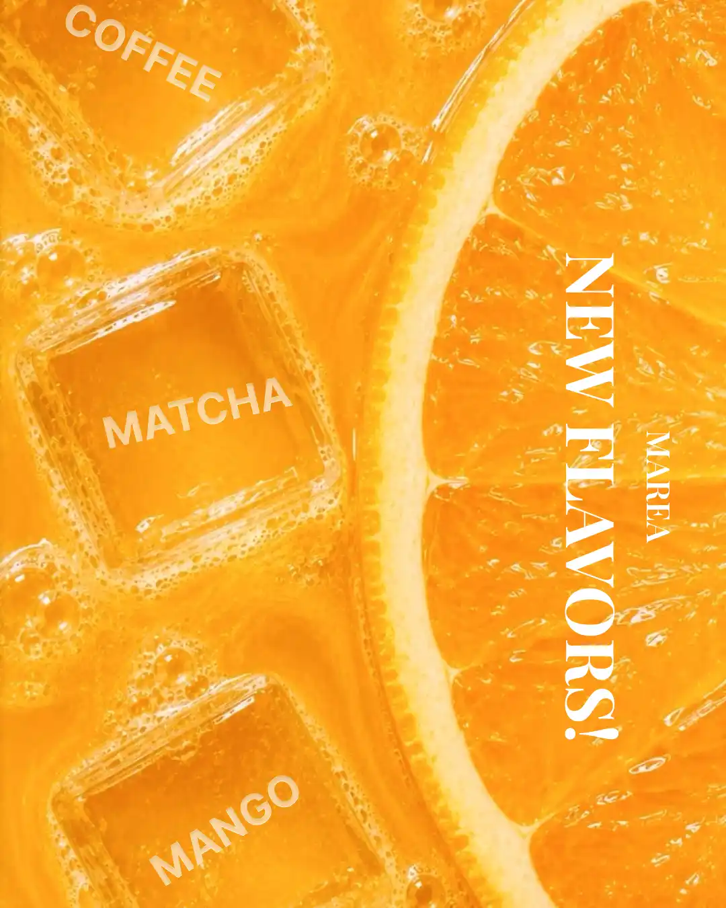

El Desafío
Crear una identidad visual que transmitiera la frescura y calidez de MAREA — y que funcionara igual de bien en un menú impreso que en una story de Instagram.
Identidad visual, menú impreso (trifold), contenido para Instagram (5 publicaciones) y 3 stories animadas. Todo en 5 días.
Dirección Creativa
La identidad de MAREA equilibra modernidad con calidez. Colores frescos, tipografía limpia y fotografía de producto que deja que las bebidas y dulces hablen por sí solos.
Tonos frescos de verde matcha, blancos cálidos y acentos tierra que evocan naturaleza y tranquilidad.
Familia sans-serif limpia para títulos y cuerpo. Jerarquía clara, legible y contemporánea.
Fresco sin ser informal. Cercano sin ser casual. El equilibrio perfecto para una cafetería que valora la calidad.
Instagram Stories
Serie de stories con contenido dinámico para mantener presencia activa en la plataforma. Cada story combina visual de bebida con copy corto y llamada a la acción.
Proceso
Investigación y Dirección
Análisis de competencia, definición de personalidad de marca y exploración de paletas visuales.
Identidad y Menú
Diseño del sistema visual, tipografía, colores y layout del trifold con placeholders de fotografía.
Contenido Digital
5 publicaciones para Instagram, 3 stories animadas y ajustes finales de coherencia visual entre todos los formatos.
Resultado
Reflexión
MAREA me permitió diseñar un sistema visual completo que vive en múltiples formatos: desde la pantalla de un teléfono hasta el menú impreso en una mesa. El desafío fue mantener coherencia visual entre touchpoints muy diferentes — digital e impreso — sin perder la esencia de la marca.
Cada pieza refuerza la misma identidad: la misma paleta, la misma tipografía, el mismo tono. Eso es lo que convierte un conjunto de piezas en una marca reconocible.
Redes Sociales
Contenido visual para Instagram que mantiene la identidad de MAREA en cada publicación. Calendario editorial con bebidas destacadas, promociones y contenido de marca que refuerza la experiencia del café.




